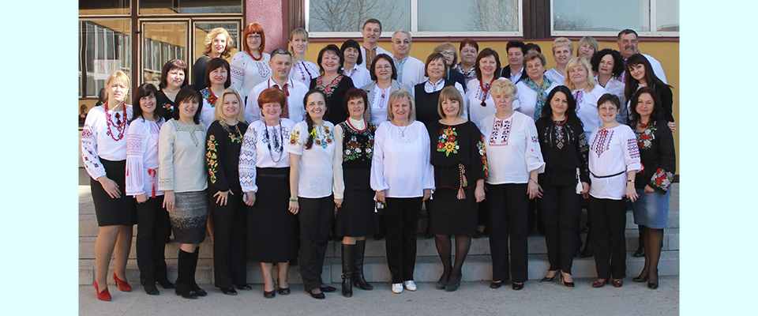

Ужгородська гімназія — одна з найстаріших середніх шкіл на українських землях. Створена у 1649 році на базі єзуїтської колегії, заснованої у 1613 році в Гуменному графом Юрієм Друґетом. Вікіпедія

Викладачі гімназії

Адреса: вулиця 8-го Березня, 44, Ужгород, Закарпатська область, 88000
Телефон: 0312 662 257
Засновано: у 1613 році
Кількість студентів: 800